How to Knit
We don't expect everyone to know how to knit. To better understand this project, here's a run through of what the knitting process does.
Casting On
Casting on is the first row of a knit piece. Its goal is to serve as a starting point for a piece, and prevent each subsequent row from unraveling. There are several different techniques for casting on, but for our machine we chose to use a simple method of starting with a slip knot, then knitting a stitch on every other needle. This would be easy to automate in a future iteration of this project compared to other established techniques, but results in a less neat final product
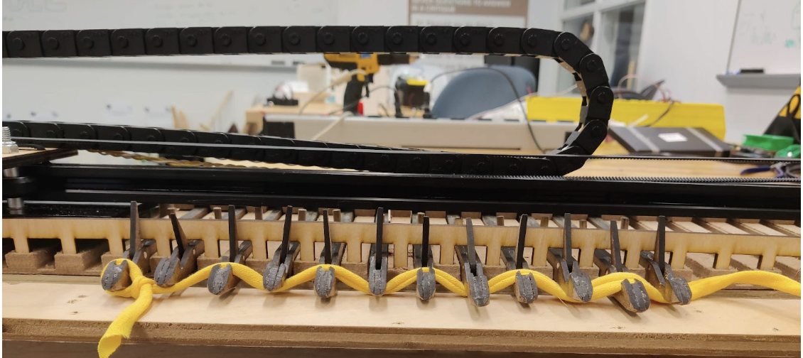Knitting a Stitch
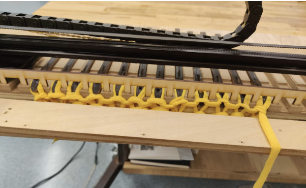Once a piece has been started, knitting a stitch essentially consists of making a loop out of yarn, then sliding an existing loop onto that loop. Here’s what that looks like for our machine: Start out with a set of needles that have already been cast onto. This photo has a few stitches already knit, for clarity.
As the linear cam moves, each needle is pushed out of its slot. This causes the existing loop to slide back, opening a latch on the hook and making space for a new piece of yarn.
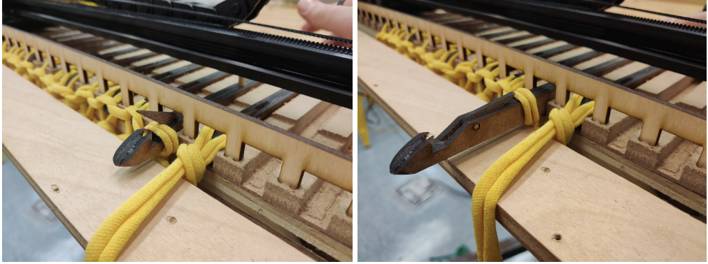While this is happening, the forward-sliding hook grabs onto the new yarn, which is positioned in place by the linear slide itself.
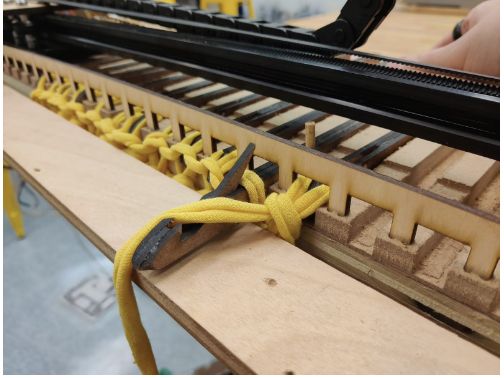With this done, the cam begins pulling the needle back into its slot. As this happens the latch on the hook closed over the new yarn, and the existing loop slides off. Congrats, you’ve knit a single stitch!
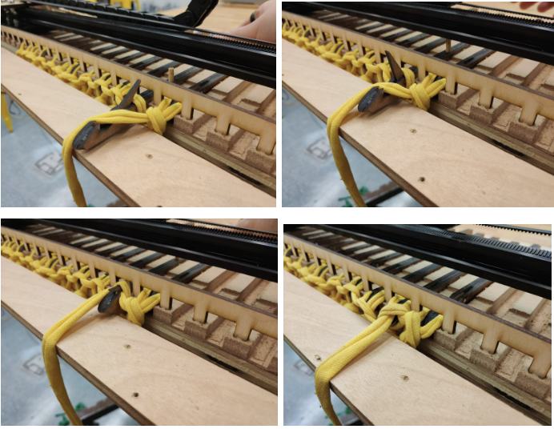As the cam slides this process repeats for each needle on the machine. Now, you’ve knit a row. This process repeats as the cam slides back and forth along its track, adding a row each time.Eventually, once enough rows have been added, the piece is finished. But before you can take it off the needles, you need to cast off.
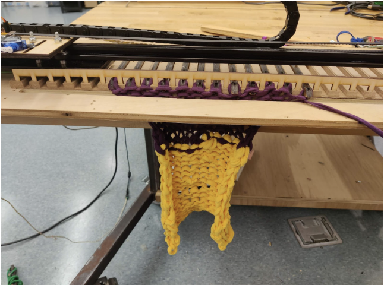Casting Off
Casting off is the opposite of casting on. It serves the same purpose of preventing the piece from unraveling, but requires a slightly more hands-on method for doing so. Start out with a finished piece, and transfer the first loop over towards the center.
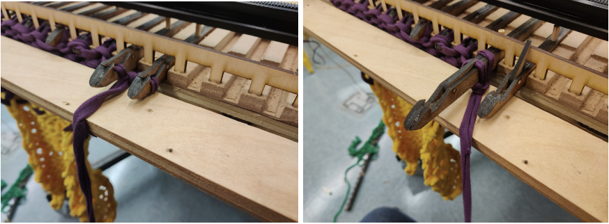Knit a stitch as usual, treating the two loops as you would the usual individual loop.
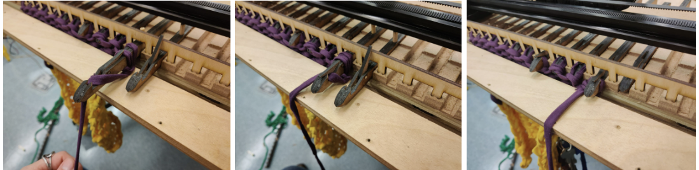 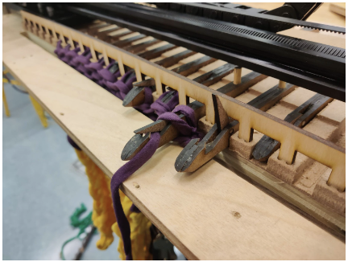Now, transfer this loop onto the next hook to the side, and repeat the knitting process again for a single stitch.
Continue until you reach the very last hook, and have a single stitch left.
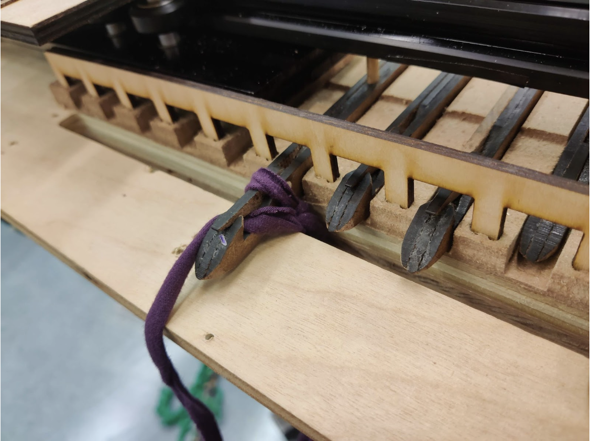Knit one more stitch, then cut the yarn. On this last loop, you can simply pull the tail end of the yarn all the way through, creating a knot and finishing your piece. Now, you have a knit item that won’t unravel. Enjoy!
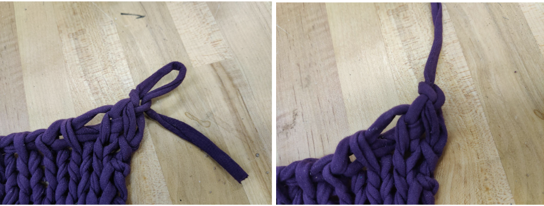